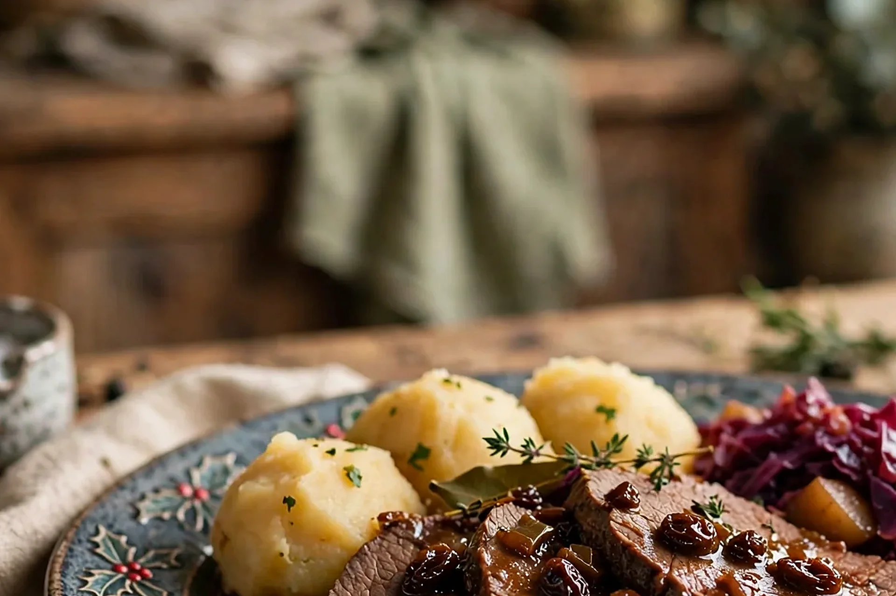

Rheinischer Sauerbraten (Rhineland Marinated Pot Roast)
Sauerbraten is not fast food – and that is exactly what makes it so special. The beef bathes for several days in a spiced vinegar marinade, then braises very slowly until it is meltingly tender. The gently sweet-and-sour sauce with raisins and Printen gingerbread is simply a must in our Rhineland home.

Contents
Ingredients
Instructions
- For the marinade, bring the vinegar, water, onions, carrot, celeriac, leek and all the spices to a boil, then let it cool completely.
- Place the beef in a large bowl or pot, pour over the cold marinade so it is mostly covered. Cover and marinate in the fridge for 3–5 days, turning daily.
- Lift the beef out of the marinade, pat dry and season all over with salt and pepper. Strain the marinade and reserve 2 cups (500 ml).
- Heat the oil in a Dutch oven until very hot and sear the beef on all sides until well browned.
- Pour in the reserved marinade and the beef broth, bring to a boil, cover and braise over low heat for about 2½ hours, turning occasionally.
- Remove the beef, wrap it in foil and let it rest. Strain the braising liquid into a saucepan.
- Add the raisins and crumbled Printen to the sauce and simmer gently for 10 minutes, until the Printen have dissolved. Season sweet-and-sour with sugar beet syrup, salt and pepper. Thicken lightly with cornstarch slurry if you like.
- Slice the beef across the grain, return it to the warm sauce and serve with red cabbage and dumplings or boiled potatoes.

Tip
The longer the marinade works, the more tender the meat – do not go under 3 days. Salt the sauce only at the end, because the marinade already brings plenty of seasoning.
📌 Find more recipe ideas on our Pinterest profile:
Lecker Rezepte on Pinterest
Lecker Rezepte on Pinterest